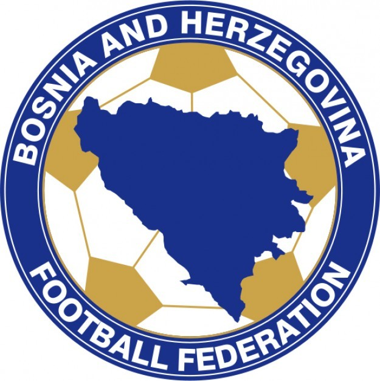
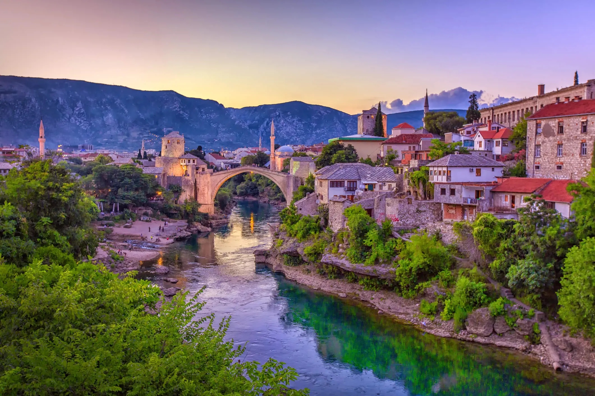
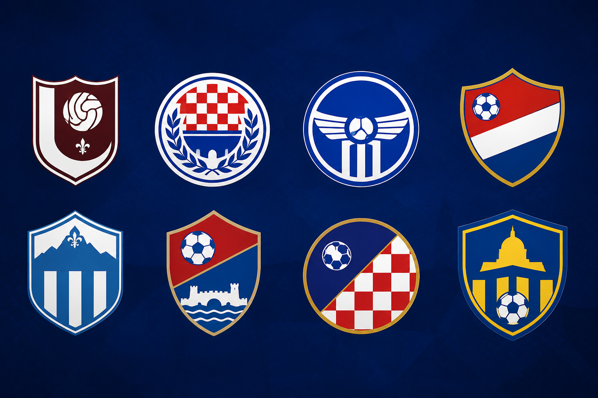
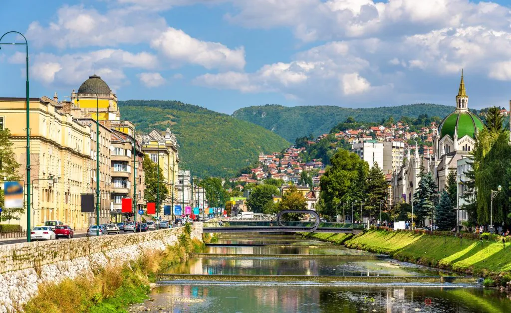
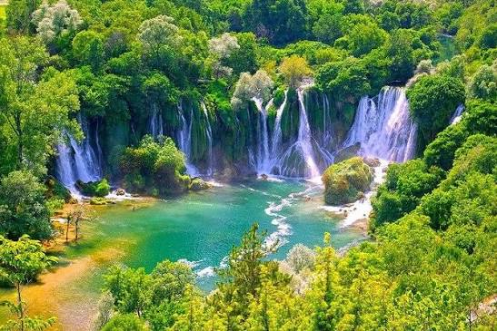
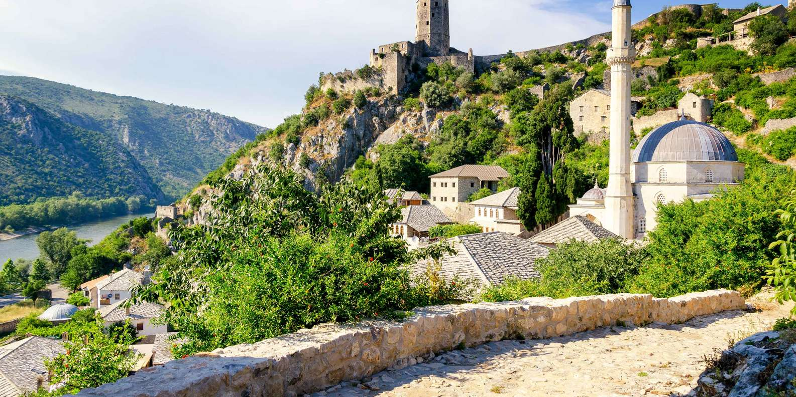

Seleção Nacional
A seleção é administrada pela Football Association of Bosnia and Herzegovina.
A Bósnia e Herzegovina é um país localizado no sudeste da Europa, na região dos Bálcãs. Sua capital é Sarajevo, uma cidade conhecida por sua importância histórica e cultural.
A população é formada principalmente por bósnios, sérvios e croatas, o que contribui para uma grande diversidade cultural e religiosa. A economia do país é baseada em atividades como indústria, agricultura, turismo e serviços. Além disso, a Bósnia e Herzegovina é conhecida por suas belas paisagens naturais, com montanhas, rios e parques nacionais que atraem visitantes de várias partes do mundo.
Atualmente, a Bósnia e Herzegovina busca fortalecer sua economia e manter a convivência entre seus diferentes grupos étnicos, preservando sua rica herança histórica e cultural.


A seleção é administrada pela Football Association of Bosnia and Herzegovina.

A maior conquista da seleção foi a classificação para a Copa do Mundo FIFA de 2014.
Foi a primeira participação do país em uma Copa do Mundo.

Meio-campista de destaque internacional.
Atuou em clubes como Juventus e Barcelona.

FK Sarajevo
HŠK Zrinjski Mostar
FK Željezničar Sarajevo
Borac Banja Luka

Símbolo mais famoso do país.
Patrimônio Mundial da UNESCO.

Possui mesquitas, igrejas católicas, ortodoxas e sinagogas.
Capital do país.

Muito procurado para banho, trilhas e passeios de barco.

Vila medieval preservada.
Possui fortalezas, mesquitas e casas de pedra com influência otomana.